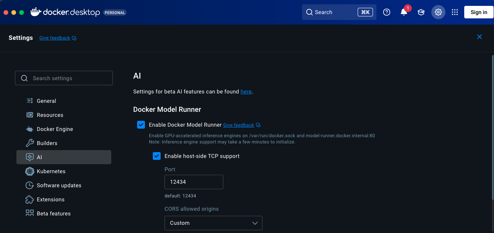

Docker Model Runner
My first laptop, an Acer Aspire, has been in my family for nearly six years. It has been through many hard times and would give its best when I wanted to run anything from Matlab to even Android Studio on it. But after seeing my friend running DeepSeek on his laptop, I also wanted to run an LLM on my system and become the next Sam Altman. However, my system crashed as soon as I loaded the model and ran it.
Then I discovered something called Docker Model Runner. With this, you can run models on your system by using an image from Docker.
What is Docker Model Runner?
Docker Model Runner is a feature in Docker Desktop that allows you to run Large Language Models (LLMs) locally using the same workflow you use for containers. It treats AI models as OCI artifacts, meaning you can pull and run them just like Docker images. The best part is that it connects directly to your computer's hardware (like your GPU) to make the model run much faster than it would inside a traditional virtual machine.
How to run an LLM model on your system
Below are the steps of how even you can run an LLM model on your system:
- First, make sure you have Docker installed on your system.
- Then, go to Docker settings and enable Docker Model Runner. 
- Once this is done, we can pull the Docker model using the command below:
(I am using this as it is the smallest model I could find on Docker Hub.)docker model pull ai/smollm2:135M-Q4_K_MIt takes some time to download the image.

- After this, using the command below, we can run the model locally in Docker:
docker model run ai/smollm2:135M-Q4_K_M
Now you can communicate with this model! :))))